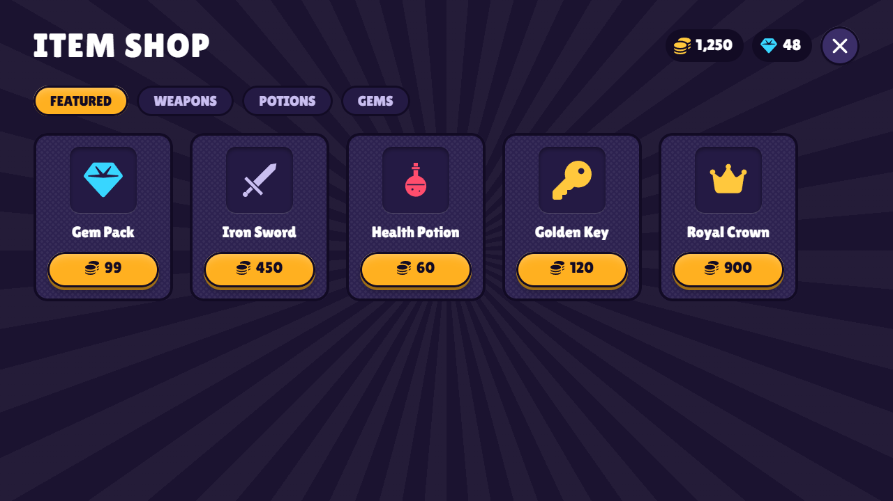
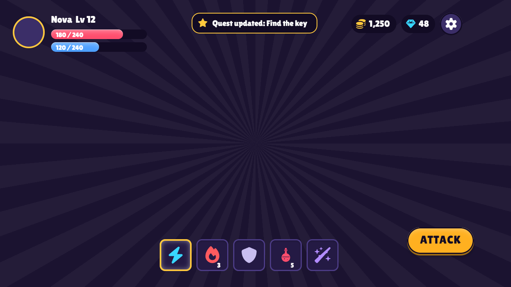
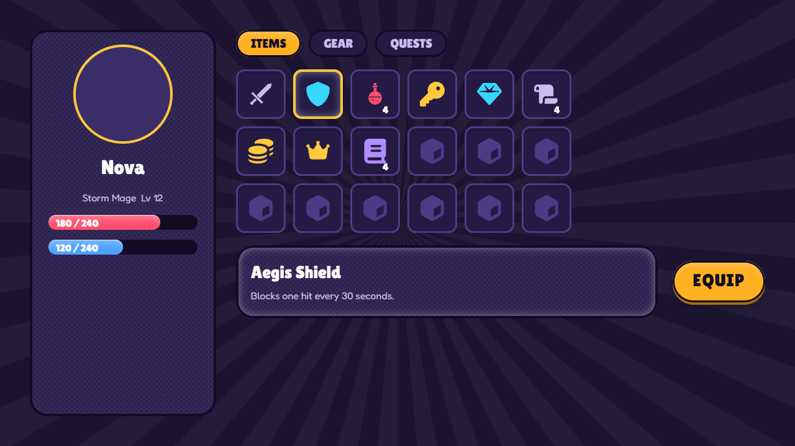
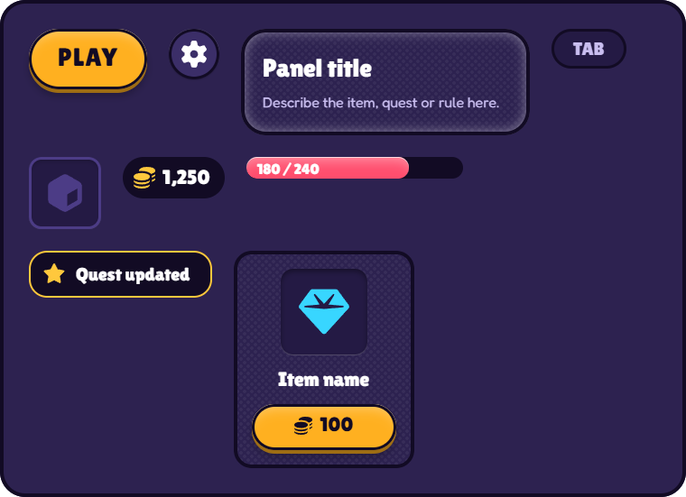

Design game UI
with your AI.
AFrame is a free, open-source canvas. Tell Claude Code or Codex what you want; it builds the screen while you watch, and you steer by selecting things and saying what to change.
Free · MIT licence · runs on your own computer · no account




How it works
-
1
Install and connect
Open AFrame and press Connect AI. It gives you one line to paste into Claude Code or Codex.
-
2
Ask for a screen
"Design a shop for my game." It starts from a template, picks icons and fonts, and builds on the canvas while you watch.
-
3
Look, point, refine
It takes screenshots of its own work and checks every button state. Select something and say "make this bigger".
Made for game interfaces
-
An icon set
Coins, gems, keys, shields, swords, potions, chests and more, in one style that takes your colours.
-
Chunky fonts
Lilita One, Luckiest Guy, Bungee and Fredoka are built in.
-
Patterns and bevels
Stripes, halftone dots, sunbursts and grain. Raised, pressed and glossy looks with an intensity dial.
-
Components with states
Define a button once. Hover, pressed, disabled and selected come with it, and every copy follows.
-
Seven templates
Game HUD, shop and inventory, plus product landing, SaaS dashboard, mobile app and pricing page.
-
Your own textures
One command copies a folder of your images in, and your AI can search and place them.
-
Local and private
Your designs are plain files on your disk. No telemetry. Your AI connects through a local connector, not a cloud.
-
Open source
MIT licensed. Read it, change it, send a fix.
Download
macOS and Linux
Each release also builds them automatically. We have not been able to test those builds yet, so treat them as experimental.
- Windows may warn you. The installer is not code-signed yet, so SmartScreen can say "Windows protected your PC". Choose More info, then Run anyway, if you trust this page.
- You need an AI that speaks MCP: Claude Code or Codex, with Node.js 20 or newer for the connector.
- Early software. Designing, screenshots and templates work. Exporting a design to React or HTML code is the next big piece and is not in yet.